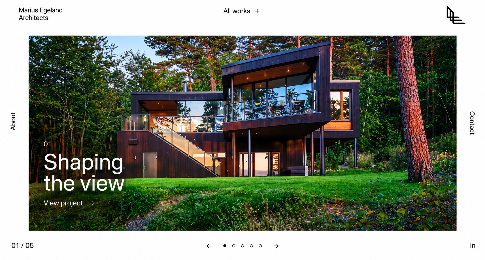

Marius Egeland is a premium architectural portfolio platform that showcases innovative designs, completed projects, and architectural expertise through a refined digital experience. Designed with a minimalist aesthetic and modern functionality, the website highlights the architect's creative vision while providing visitors with an immersive journey through residential, commercial, and conceptual projects. The platform combines elegant visuals, responsive performance, and intuitive navigation to reflect the precision and craftsmanship behind every architectural masterpiece.
Project:
Marius Egeland
Timeline:
Ongoing
Scope:
Complete Portfolio Website Design & Development, Responsive UI/UX Design, Architecture Project Showcase, Interactive Portfolio Gallery, Custom Project Detail Pages, CMS Integration, Blog & Insights, SEO Optimization, Performance Optimization, Mobile-Responsive Development, Smooth Animations & Micro-Interactions, Contact & Consultation Forms, Modern Minimalist User Experience

Creating a premium architectural portfolio requires more than showcasing projects—it demands a digital experience that reflects creativity, precision, and professionalism. Marius Egeland needed a modern portfolio website that could present architectural work through immersive visuals, intuitive navigation, and a minimalist interface while maintaining exceptional performance across every device.
Architectural websites must communicate creativity, attention to detail, and technical excellence through every interaction. With Marius Egeland, our design and development expertise delivered a sophisticated digital platform that strengthens brand identity, showcases exceptional architectural work, and creates lasting impressions for clients and collaborators alike.
We crafted a sophisticated digital portfolio for Marius Egeland, combining modern UI/UX design, responsive development, performance optimization, and scalable content management to create an immersive platform that reflects architectural excellence and creative vision.
Exceptional architectural websites demand the same precision and attention to detail as the structures they represent. With Marius Egeland, we delivered a modern, performance-driven portfolio that beautifully showcases architectural expertise while creating a seamless experience for clients, collaborators, and design enthusiasts.
The Marius Egeland project reflects Infotive Solutions' ability to create visually striking, high-performance websites that combine architectural storytelling with modern web technology. By balancing minimalist design, exceptional usability, and scalable development, we delivered a platform that strengthens brand credibility, showcases creative excellence, and provides a future-ready digital foundation for continued growth.